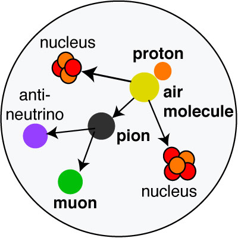

|  |
|
This is an example on what can happen when a proton (cosmic ray) hits an air molecule and produces a pion and two nuclei. The pion decays into a muon and anti-neutrino. In the animation overlaid on Hans Joachim Drescher's simulation we watch one muon in a huge shower of other particles as it makes its way down to the cosmic ray detector. |